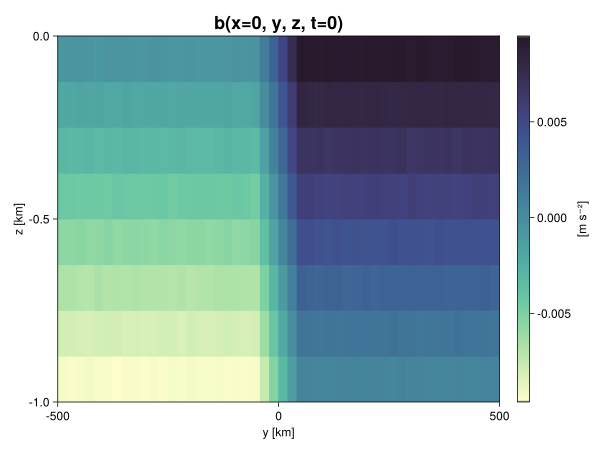
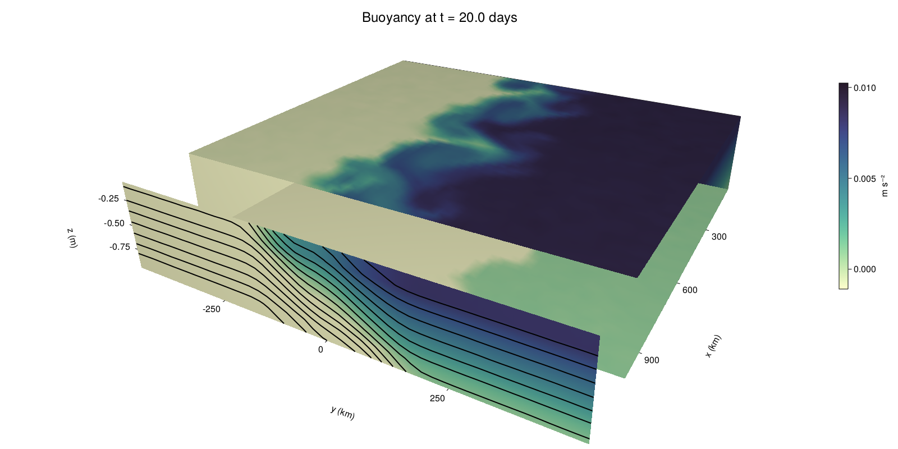

Baroclinic adjustment
In this example, we simulate the evolution and equilibration of a baroclinically unstable front.
Install dependencies
First let's make sure we have all required packages installed.
using Pkg
pkg"add Oceananigans, CairoMakie"using Oceananigans
using Oceananigans.UnitsGrid
We use a three-dimensional channel that is periodic in the x direction:
Lx = 1000kilometers # east-west extent [m]
Ly = 1000kilometers # north-south extent [m]
Lz = 1kilometers # depth [m]
grid = RectilinearGrid(size = (48, 48, 8),
x = (0, Lx),
y = (-Ly/2, Ly/2),
z = (-Lz, 0),
topology = (Periodic, Bounded, Bounded))48×48×8 RectilinearGrid{Float64, Periodic, Bounded, Bounded} on CPU with 3×3×3 halo
├── Periodic x ∈ [0.0, 1.0e6) regularly spaced with Δx=20833.3
├── Bounded y ∈ [-500000.0, 500000.0] regularly spaced with Δy=20833.3
└── Bounded z ∈ [-1000.0, 0.0] regularly spaced with Δz=125.0Model
We built a HydrostaticFreeSurfaceModel with an ImplicitFreeSurface solver. Regarding Coriolis, we use a beta-plane centered at 45° South.
model = HydrostaticFreeSurfaceModel(; grid,
coriolis = BetaPlane(latitude = -45),
buoyancy = BuoyancyTracer(),
tracers = :b,
momentum_advection = WENO(),
tracer_advection = WENO())HydrostaticFreeSurfaceModel{CPU, RectilinearGrid}(time = 0 seconds, iteration = 0)
├── grid: 48×48×8 RectilinearGrid{Float64, Periodic, Bounded, Bounded} on CPU with 3×3×3 halo
├── timestepper: QuasiAdamsBashforth2TimeStepper
├── tracers: b
├── closure: Nothing
├── buoyancy: BuoyancyTracer with ĝ = NegativeZDirection()
├── free surface: ImplicitFreeSurface with gravitational acceleration 9.80665 m s⁻²
│ └── solver: FFTImplicitFreeSurfaceSolver
└── coriolis: BetaPlane{Float64}We start our simulation from rest with a baroclinically unstable buoyancy distribution. We use ramp(y, Δy), defined below, to specify a front with width Δy and horizontal buoyancy gradient M². We impose the front on top of a vertical buoyancy gradient N² and a bit of noise.
"""
ramp(y, Δy)
Linear ramp from 0 to 1 between -Δy/2 and +Δy/2.
For example:
```
y < -Δy/2 => ramp = 0
-Δy/2 < y < -Δy/2 => ramp = y / Δy
y > Δy/2 => ramp = 1
```
"""
ramp(y, Δy) = min(max(0, y/Δy + 1/2), 1)
N² = 1e-5 # [s⁻²] buoyancy frequency / stratification
M² = 1e-7 # [s⁻²] horizontal buoyancy gradient
Δy = 100kilometers # width of the region of the front
Δb = Δy * M² # buoyancy jump associated with the front
ϵb = 1e-2 * Δb # noise amplitude
bᵢ(x, y, z) = N² * z + Δb * ramp(y, Δy) + ϵb * randn()
set!(model, b=bᵢ)Let's visualize the initial buoyancy distribution.
using CairoMakie
# Build coordinates with units of kilometers
x, y, z = 1e-3 .* nodes(grid, (Center(), Center(), Center()))
b = model.tracers.b
fig, ax, hm = heatmap(y, z, interior(b)[1, :, :],
colormap=:deep,
axis = (xlabel = "y [km]",
ylabel = "z [km]",
title = "b(x=0, y, z, t=0)",
titlesize = 24))
Colorbar(fig[1, 2], hm, label = "[m s⁻²]")
fig
Simulation
Now let's build a Simulation.
simulation = Simulation(model, Δt=20minutes, stop_time=20days)Simulation of HydrostaticFreeSurfaceModel{CPU, RectilinearGrid}(time = 0 seconds, iteration = 0)
├── Next time step: 20 minutes
├── Elapsed wall time: 0 seconds
├── Wall time per iteration: NaN days
├── Stop time: 20 days
├── Stop iteration : Inf
├── Wall time limit: Inf
├── Callbacks: OrderedDict with 4 entries:
│ ├── stop_time_exceeded => Callback of stop_time_exceeded on IterationInterval(1)
│ ├── stop_iteration_exceeded => Callback of stop_iteration_exceeded on IterationInterval(1)
│ ├── wall_time_limit_exceeded => Callback of wall_time_limit_exceeded on IterationInterval(1)
│ └── nan_checker => Callback of NaNChecker for u on IterationInterval(100)
├── Output writers: OrderedDict with no entries
└── Diagnostics: OrderedDict with no entriesWe add a TimeStepWizard callback to adapt the simulation's time-step,
conjure_time_step_wizard!(simulation, IterationInterval(20), cfl=0.2, max_Δt=20minutes)Also, we add a callback to print a message about how the simulation is going,
using Printf
wall_clock = Ref(time_ns())
function print_progress(sim)
u, v, w = model.velocities
progress = 100 * (time(sim) / sim.stop_time)
elapsed = (time_ns() - wall_clock[]) / 1e9
@printf("[%05.2f%%] i: %d, t: %s, wall time: %s, max(u): (%6.3e, %6.3e, %6.3e) m/s, next Δt: %s\n",
progress, iteration(sim), prettytime(sim), prettytime(elapsed),
maximum(abs, u), maximum(abs, v), maximum(abs, w), prettytime(sim.Δt))
wall_clock[] = time_ns()
return nothing
end
add_callback!(simulation, print_progress, IterationInterval(100))Diagnostics/Output
Here, we save the buoyancy, $b$, at the edges of our domain as well as the zonal ($x$) average of buoyancy.
u, v, w = model.velocities
ζ = ∂x(v) - ∂y(u)
B = Average(b, dims=1)
U = Average(u, dims=1)
V = Average(v, dims=1)
filename = "baroclinic_adjustment"
save_fields_interval = 0.5day
slicers = (east = (grid.Nx, :, :),
north = (:, grid.Ny, :),
bottom = (:, :, 1),
top = (:, :, grid.Nz))
for side in keys(slicers)
indices = slicers[side]
simulation.output_writers[side] = JLD2OutputWriter(model, (; b, ζ);
filename = filename * "_$(side)_slice",
schedule = TimeInterval(save_fields_interval),
overwrite_existing = true,
indices)
end
simulation.output_writers[:zonal] = JLD2OutputWriter(model, (; b=B, u=U, v=V);
filename = filename * "_zonal_average",
schedule = TimeInterval(save_fields_interval),
overwrite_existing = true)JLD2OutputWriter scheduled on TimeInterval(12 hours):
├── filepath: ./baroclinic_adjustment_zonal_average.jld2
├── 3 outputs: (b, u, v)
├── array type: Array{Float64}
├── including: [:grid, :coriolis, :buoyancy, :closure]
└── max filesize: Inf YiBNow we're ready to run.
@info "Running the simulation..."
run!(simulation)
@info "Simulation completed in " * prettytime(simulation.run_wall_time)[ Info: Running the simulation...
[ Info: Initializing simulation...
[00.00%] i: 0, t: 0 seconds, wall time: 32.481 seconds, max(u): (0.000e+00, 0.000e+00, 0.000e+00) m/s, next Δt: 20 minutes
[ Info: ... simulation initialization complete (22.647 seconds)
[ Info: Executing initial time step...
[ Info: ... initial time step complete (30.188 seconds).
[06.94%] i: 100, t: 1.389 days, wall time: 1.352 minutes, max(u): (1.264e-01, 1.195e-01, 1.515e-03) m/s, next Δt: 20 minutes
[13.89%] i: 200, t: 2.778 days, wall time: 26.831 seconds, max(u): (2.113e-01, 1.798e-01, 1.742e-03) m/s, next Δt: 20 minutes
[20.83%] i: 300, t: 4.167 days, wall time: 25.468 seconds, max(u): (2.888e-01, 2.354e-01, 1.707e-03) m/s, next Δt: 20 minutes
[27.78%] i: 400, t: 5.556 days, wall time: 26.838 seconds, max(u): (3.680e-01, 3.214e-01, 1.860e-03) m/s, next Δt: 20 minutes
[34.72%] i: 500, t: 6.944 days, wall time: 33.307 seconds, max(u): (5.028e-01, 5.385e-01, 2.191e-03) m/s, next Δt: 20 minutes
[41.67%] i: 600, t: 8.333 days, wall time: 27.793 seconds, max(u): (7.056e-01, 9.707e-01, 2.597e-03) m/s, next Δt: 20 minutes
[48.61%] i: 700, t: 9.722 days, wall time: 26.949 seconds, max(u): (9.092e-01, 1.274e+00, 4.452e-03) m/s, next Δt: 20 minutes
[55.56%] i: 800, t: 11.111 days, wall time: 27.313 seconds, max(u): (1.326e+00, 1.204e+00, 4.423e-03) m/s, next Δt: 20 minutes
[62.50%] i: 900, t: 12.500 days, wall time: 29.656 seconds, max(u): (1.351e+00, 1.231e+00, 4.315e-03) m/s, next Δt: 20 minutes
[69.44%] i: 1000, t: 13.889 days, wall time: 28.280 seconds, max(u): (1.310e+00, 1.136e+00, 4.700e-03) m/s, next Δt: 20 minutes
[76.39%] i: 1100, t: 15.278 days, wall time: 27.363 seconds, max(u): (1.321e+00, 1.199e+00, 2.865e-03) m/s, next Δt: 20 minutes
[83.33%] i: 1200, t: 16.667 days, wall time: 31.544 seconds, max(u): (1.267e+00, 1.039e+00, 2.904e-03) m/s, next Δt: 20 minutes
[90.28%] i: 1300, t: 18.056 days, wall time: 32.359 seconds, max(u): (1.300e+00, 1.034e+00, 3.033e-03) m/s, next Δt: 20 minutes
[97.22%] i: 1400, t: 19.444 days, wall time: 37.923 seconds, max(u): (1.281e+00, 1.154e+00, 2.090e-03) m/s, next Δt: 20 minutes
[ Info: Simulation is stopping after running for 8.056 minutes.
[ Info: Simulation time 20 days equals or exceeds stop time 20 days.
[ Info: Simulation completed in 8.062 minutes
Visualization
All that's left is to make a pretty movie. Actually, we make two visualizations here. First, we illustrate how to make a 3D visualization with Makie's Axis3 and Makie.surface. Then we make a movie in 2D. We use CairoMakie in this example, but note that using GLMakie is more convenient on a system with OpenGL, as figures will be displayed on the screen.
using CairoMakieThree-dimensional visualization
We load the saved buoyancy output on the top, bottom, north, and east surface as FieldTimeSerieses.
filename = "baroclinic_adjustment"
sides = keys(slicers)
slice_filenames = NamedTuple(side => filename * "_$(side)_slice.jld2" for side in sides)
b_timeserieses = (east = FieldTimeSeries(slice_filenames.east, "b"),
north = FieldTimeSeries(slice_filenames.north, "b"),
bottom = FieldTimeSeries(slice_filenames.bottom, "b"),
top = FieldTimeSeries(slice_filenames.top, "b"))
B_timeseries = FieldTimeSeries(filename * "_zonal_average.jld2", "b")
times = B_timeseries.times
grid = B_timeseries.grid48×48×8 RectilinearGrid{Float64, Periodic, Bounded, Bounded} on CPU with 3×3×3 halo
├── Periodic x ∈ [0.0, 1.0e6) regularly spaced with Δx=20833.3
├── Bounded y ∈ [-500000.0, 500000.0] regularly spaced with Δy=20833.3
└── Bounded z ∈ [-1000.0, 0.0] regularly spaced with Δz=125.0We build the coordinates. We rescale horizontal coordinates to kilometers.
xb, yb, zb = nodes(b_timeserieses.east)
xb = xb ./ 1e3 # convert m -> km
yb = yb ./ 1e3 # convert m -> km
Nx, Ny, Nz = size(grid)
x_xz = repeat(x, 1, Nz)
y_xz_north = y[end] * ones(Nx, Nz)
z_xz = repeat(reshape(z, 1, Nz), Nx, 1)
x_yz_east = x[end] * ones(Ny, Nz)
y_yz = repeat(y, 1, Nz)
z_yz = repeat(reshape(z, 1, Nz), grid.Ny, 1)
x_xy = x
y_xy = y
z_xy_top = z[end] * ones(grid.Nx, grid.Ny)
z_xy_bottom = z[1] * ones(grid.Nx, grid.Ny)Then we create a 3D axis. We use zonal_slice_displacement to control where the plot of the instantaneous zonal average flow is located.
fig = Figure(resolution = (1600, 800))
zonal_slice_displacement = 1.2
ax = Axis3(fig[2, 1],
aspect=(1, 1, 1/5),
xlabel = "x (km)",
ylabel = "y (km)",
zlabel = "z (m)",
xlabeloffset = 100,
ylabeloffset = 100,
zlabeloffset = 100,
limits = ((x[1], zonal_slice_displacement * x[end]), (y[1], y[end]), (z[1], z[end])),
elevation = 0.45,
azimuth = 6.8,
xspinesvisible = false,
zgridvisible = false,
protrusions = 40,
perspectiveness = 0.7)Axis3()We use data from the final savepoint for the 3D plot. Note that this plot can easily be animated by using Makie's Observable. To dive into Observables, check out Makie.jl's Documentation.
n = length(times)41Now let's make a 3D plot of the buoyancy and in front of it we'll use the zonally-averaged output to plot the instantaneous zonal-average of the buoyancy.
b_slices = (east = interior(b_timeserieses.east[n], 1, :, :),
north = interior(b_timeserieses.north[n], :, 1, :),
bottom = interior(b_timeserieses.bottom[n], :, :, 1),
top = interior(b_timeserieses.top[n], :, :, 1))
# Zonally-averaged buoyancy
B = interior(B_timeseries[n], 1, :, :)
clims = 1.1 .* extrema(b_timeserieses.top[n][:])
kwargs = (colorrange=clims, colormap=:deep)
surface!(ax, x_yz_east, y_yz, z_yz; color = b_slices.east, kwargs...)
surface!(ax, x_xz, y_xz_north, z_xz; color = b_slices.north, kwargs...)
surface!(ax, x_xy, y_xy, z_xy_bottom ; color = b_slices.bottom, kwargs...)
surface!(ax, x_xy, y_xy, z_xy_top; color = b_slices.top, kwargs...)
sf = surface!(ax, zonal_slice_displacement .* x_yz_east, y_yz, z_yz; color = B, kwargs...)
contour!(ax, y, z, B; transformation = (:yz, zonal_slice_displacement * x[end]),
levels = 15, linewidth = 2, color = :black)
Colorbar(fig[2, 2], sf, label = "m s⁻²", height = Relative(0.4), tellheight=false)
title = "Buoyancy at t = " * string(round(times[n] / day, digits=1)) * " days"
fig[1, 1:2] = Label(fig, title; fontsize = 24, tellwidth = false, padding = (0, 0, -120, 0))
rowgap!(fig.layout, 1, Relative(-0.2))
colgap!(fig.layout, 1, Relative(-0.1))
save("baroclinic_adjustment_3d.png", fig)
Two-dimensional movie
We make a 2D movie that shows buoyancy $b$ and vertical vorticity $ζ$ at the surface, as well as the zonally-averaged zonal and meridional velocities $U$ and $V$ in the $(y, z)$ plane. First we load the FieldTimeSeries and extract the additional coordinates we'll need for plotting
ζ_timeseries = FieldTimeSeries(slice_filenames.top, "ζ")
U_timeseries = FieldTimeSeries(filename * "_zonal_average.jld2", "u")
B_timeseries = FieldTimeSeries(filename * "_zonal_average.jld2", "b")
V_timeseries = FieldTimeSeries(filename * "_zonal_average.jld2", "v")
xζ, yζ, zζ = nodes(ζ_timeseries)
yv = ynodes(V_timeseries)
xζ = xζ ./ 1e3 # convert m -> km
yζ = yζ ./ 1e3 # convert m -> km
yv = yv ./ 1e3 # convert m -> km49-element Vector{Float64}:
-500.0
-479.1666666666667
-458.3333333333333
-437.5
-416.6666666666667
-395.8333333333333
-375.0
-354.1666666666667
-333.3333333333333
-312.5
-291.6666666666667
-270.8333333333333
-250.0
-229.16666666666666
-208.33333333333334
-187.5
-166.66666666666666
-145.83333333333334
-125.0
-104.16666666666667
-83.33333333333333
-62.5
-41.666666666666664
-20.833333333333332
0.0
20.833333333333332
41.666666666666664
62.5
83.33333333333333
104.16666666666667
125.0
145.83333333333334
166.66666666666666
187.5
208.33333333333334
229.16666666666666
250.0
270.8333333333333
291.6666666666667
312.5
333.3333333333333
354.1666666666667
375.0
395.8333333333333
416.6666666666667
437.5
458.3333333333333
479.1666666666667
500.0Next, we set up a plot with 4 panels. The top panels are large and square, while the bottom panels get a reduced aspect ratio through rowsize!.
set_theme!(Theme(fontsize=24))
fig = Figure(resolution=(1800, 1000))
axb = Axis(fig[1, 2], xlabel="x (km)", ylabel="y (km)", aspect=1)
axζ = Axis(fig[1, 3], xlabel="x (km)", ylabel="y (km)", aspect=1, yaxisposition=:right)
axu = Axis(fig[2, 2], xlabel="y (km)", ylabel="z (m)")
axv = Axis(fig[2, 3], xlabel="y (km)", ylabel="z (m)", yaxisposition=:right)
rowsize!(fig.layout, 2, Relative(0.3))To prepare a plot for animation, we index the timeseries with an Observable,
n = Observable(1)
b_top = @lift interior(b_timeserieses.top[$n], :, :, 1)
ζ_top = @lift interior(ζ_timeseries[$n], :, :, 1)
U = @lift interior(U_timeseries[$n], 1, :, :)
V = @lift interior(V_timeseries[$n], 1, :, :)
B = @lift interior(B_timeseries[$n], 1, :, :)Observable([-0.009383262707518906 -0.008094546287733134 -0.006867700039988473 -0.005618769909989162 -0.004351153254440858 -0.0031266955989661762 -0.0018665378774697398 -0.0006325650380761971; -0.009359824186885463 -0.008129841911047953 -0.00686909330299362 -0.005609861673512584 -0.004385950170654267 -0.0031286396426319723 -0.0018907703111896506 -0.0006103744901170126; -0.009379362648268766 -0.008167841013592154 -0.006896827757885071 -0.005633590564644517 -0.0043685952719703025 -0.0031197134717201804 -0.0018863063185539444 -0.0006083918068808459; -0.00937199865196643 -0.008138210492757645 -0.006879209069129398 -0.005615295882267698 -0.004349874725708787 -0.0031072274008168963 -0.001884546750508047 -0.0006245763827367831; -0.009370405649316495 -0.008123928501717963 -0.0068765285187444465 -0.00561113670013988 -0.0043836167779672365 -0.003118455243199782 -0.0018835460427407058 -0.0006381273724749248; -0.009382377935771305 -0.0081219099542323 -0.006849100622835933 -0.005650539715839408 -0.004393460779076448 -0.0030896991837951505 -0.0018846951976617583 -0.0006078325792897875; -0.009372388161327398 -0.008117591611045563 -0.006869785313115221 -0.005644264641267567 -0.004391699266132621 -0.003118914001411065 -0.0018733226798678445 -0.000631389296993744; -0.009354663584402284 -0.008144320594000354 -0.0068783974990534675 -0.005633312811468853 -0.004347997211256696 -0.003111476255857571 -0.001865540956280161 -0.0006319058483806934; -0.009360523910758476 -0.008095778925510116 -0.006894229425534641 -0.005609457464541543 -0.004395748969523041 -0.0031307485367249167 -0.0018524471445845157 -0.0006140985552255082; -0.009380789932073726 -0.008133370805101537 -0.006906660400275578 -0.0056281820125660435 -0.0043704766563805435 -0.0031240485761655327 -0.0018825250929726733 -0.0006358841252799777; -0.009348084064557434 -0.008137275284948847 -0.00684706076142039 -0.00562189291784199 -0.004373222107464617 -0.0031186735838983457 -0.0018727057109240053 -0.0006653456259061111; -0.009357988808147526 -0.0081460136831837 -0.006869600666577512 -0.005609572238408175 -0.004363964504548804 -0.0031127939351211953 -0.0018725888778426758 -0.0006138749892153498; -0.009384538433285971 -0.00813875711114071 -0.006888686123872434 -0.005620489257507428 -0.004378383702927438 -0.003124505002962089 -0.001906440157149425 -0.0006046772320641025; -0.009349360649817121 -0.008124700538112749 -0.006875577286653274 -0.005649098428464371 -0.004387178076656927 -0.003123042723762888 -0.0018645189231056552 -0.0006272414582977188; -0.009367352543040679 -0.008101025140021157 -0.006872929119904821 -0.0056418103402058216 -0.0043728131527667686 -0.003127502823832841 -0.0018947735141726437 -0.0006252396149931724; -0.009375898880907597 -0.008109122458354028 -0.006862054970670953 -0.005636819691905726 -0.004389641339502043 -0.003143902586623971 -0.001879341255266703 -0.0006249830267918462; -0.009368145835008357 -0.008119055986385985 -0.006894352473330242 -0.005633222113823814 -0.004352081343845565 -0.003135505788382573 -0.0018856175373742963 -0.000618074379877624; -0.009353439303061113 -0.008140796527826382 -0.0068530649029373 -0.005615688292616018 -0.004363350695006025 -0.0030869663133115785 -0.0018865880970285857 -0.0006418352363588695; -0.009385335448690081 -0.008121612043635868 -0.006877387673175695 -0.005624127713288359 -0.004378709754101686 -0.003132255882021946 -0.0018599338852000075 -0.0006241982534117311; -0.009370575109856645 -0.008132640164940032 -0.006883731044181193 -0.005615868060319877 -0.004363848065134012 -0.0031087254591931185 -0.0018699787631053504 -0.0006256283764649269; -0.009391476136821472 -0.008134982793954498 -0.006870790297461088 -0.005621881475739645 -0.004368835919256987 -0.0031433498176128096 -0.001882218676107571 -0.0006303461620325588; -0.009391571890696454 -0.00811220489746267 -0.006880727355331676 -0.005607948991229972 -0.0043655575262614345 -0.003110502097221184 -0.0018782763866554706 -0.0006322456290950338; -0.0075000458142045826 -0.006241062440134181 -0.004989338994874607 -0.0037336711953991505 -0.002523396906076976 -0.0012421829440041109 1.8120850923523876e-6 0.0012739608357400848; -0.005400801658014029 -0.0041495799210530876 -0.0029277782935894295 -0.001675196178574735 -0.00041902610419317543 0.0008445907120747894 0.002095867682067227 0.0033185854593723815; -0.0033287072174296947 -0.0020456917130235075 -0.0008172294916253256 0.00041009191505914387 0.0016759721068554557 0.0029328559284821586 0.004169771228912196 0.005411356200932205; -0.00125323111517398 2.1096882267511774e-6 0.001227876079988561 0.0024993602559157868 0.003750120892051474 0.004998993653185422 0.0062227366930303 0.007512221476309811; 0.0006466880572464646 0.001872919519092598 0.0031291161172163004 0.004394802967368948 0.0056442494825202924 0.006870009501199037 0.008116486527155744 0.009375822837351184; 0.0006096108722088638 0.0018980690705082029 0.0031396028059411485 0.004399180348213035 0.0056151227786779105 0.006887599961509603 0.008129162671857565 0.009385463534480908; 0.0006150626980899759 0.0018817995248683612 0.003155993329246772 0.004377518944863087 0.0056354671031635314 0.006890856099459962 0.008124589020681264 0.009403759260647267; 0.0006135873401895035 0.0019055084339501757 0.0031022602759599306 0.0043766862922739146 0.0056276368503449066 0.006868309044422282 0.00813011762477354 0.009391566648691896; 0.0006254035572297148 0.0019044540286424366 0.003114892729504958 0.0043709238267713715 0.005614635924485246 0.006862634385202612 0.008147437404740632 0.00936563036490687; 0.0006209569853243069 0.0018755355804016764 0.0031030641147011873 0.00436813337682082 0.005634259115518979 0.006866729047851489 0.008132902026140447 0.009350468938905553; 0.0006180494099631706 0.0018754363812637875 0.003105011405182117 0.004399192667581147 0.005641612861232211 0.006887329068390441 0.0081479271025834 0.009398006573706258; 0.0006032498492399833 0.0019060305698559727 0.0031293114261890034 0.004354003855557761 0.005601405395738611 0.00686486591593254 0.008126621634307959 0.009380831647373054; 0.0006192756746561194 0.0018887164153721077 0.0031303319990635347 0.004357950679217802 0.005606183422234064 0.006897022785035896 0.008136650101606895 0.009374127778030901; 0.0006368527266518109 0.0018633089780337737 0.0031242810573407654 0.00438659282457659 0.005626465402110065 0.006889060984265852 0.00814288620557418 0.009374736330980715; 0.000636394989857885 0.0019066568144114704 0.003149666832607253 0.0043736187355884176 0.0056282515716161415 0.006864690169941277 0.008120404844348323 0.009400292868159625; 0.0006296403576050813 0.0019028733577895623 0.0031544163423042216 0.004366465048133532 0.00560108244944946 0.006869787473908345 0.008114561546669131 0.009395098660655016; 0.0006423956536454564 0.0018761212508483407 0.0031171526663158686 0.00434141269752874 0.00563069941467011 0.00686794555826395 0.008120271482125197 0.009379404751711591; 0.0006279905833262209 0.001871141590689341 0.003127267625027945 0.004397409957972873 0.0056445934547319256 0.006878455746180234 0.008126478744471682 0.009386874744054172; 0.000645371536965117 0.0018712986724601507 0.0031294515094853603 0.004402304012781427 0.005625014927441915 0.006863165651160808 0.008121283427530159 0.00936802068988612; 0.0006069697508652216 0.0018745939375166476 0.0031345127831266255 0.004369624222354167 0.005617689730346459 0.0068771179153789596 0.008101820292128439 0.009363159161543509; 0.0006194623734775904 0.0018647134284395916 0.003124802757029091 0.00438902875574133 0.005617507353230678 0.006885776810744159 0.008117080390117543 0.009367146257525528; 0.000613030445784218 0.0018873728397206938 0.003140479580264224 0.004364869943652283 0.00561155599149719 0.006883392260390495 0.008116980752370127 0.009401273031884327; 0.000635529754004406 0.001881461035415766 0.003119009982291322 0.004362376731636849 0.005605559263816465 0.006872130147484726 0.008136894561961792 0.009389633153168446; 0.0006344507838787859 0.0018700681936396717 0.0031106214479913233 0.004361389209191154 0.005626150912435485 0.00688026872359844 0.008116323328133333 0.009407333727669406; 0.0006453475597256274 0.001873786301095205 0.00313813711439377 0.004380377119155679 0.005618400225065205 0.006896268438408699 0.00808992441312313 0.009367583379397826; 0.0006125823534843859 0.0018871912182198299 0.0031260034806523227 0.004395446595565079 0.005639413972155209 0.006883612405270265 0.008153637008016567 0.009367851221554264])
and then build our plot:
hm = heatmap!(axb, xb, yb, b_top, colorrange=(0, Δb), colormap=:thermal)
Colorbar(fig[1, 1], hm, flipaxis=false, label="Surface b(x, y) (m s⁻²)")
hm = heatmap!(axζ, xζ, yζ, ζ_top, colorrange=(-5e-5, 5e-5), colormap=:balance)
Colorbar(fig[1, 4], hm, label="Surface ζ(x, y) (s⁻¹)")
hm = heatmap!(axu, yb, zb, U; colorrange=(-5e-1, 5e-1), colormap=:balance)
Colorbar(fig[2, 1], hm, flipaxis=false, label="Zonally-averaged U(y, z) (m s⁻¹)")
contour!(axu, yb, zb, B; levels=15, color=:black)
hm = heatmap!(axv, yv, zb, V; colorrange=(-1e-1, 1e-1), colormap=:balance)
Colorbar(fig[2, 4], hm, label="Zonally-averaged V(y, z) (m s⁻¹)")
contour!(axv, yb, zb, B; levels=15, color=:black)Finally, we're ready to record the movie.
frames = 1:length(times)
record(fig, filename * ".mp4", frames, framerate=8) do i
n[] = i
endThis page was generated using Literate.jl.